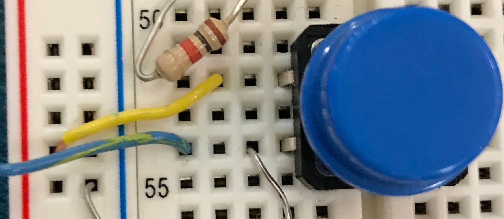
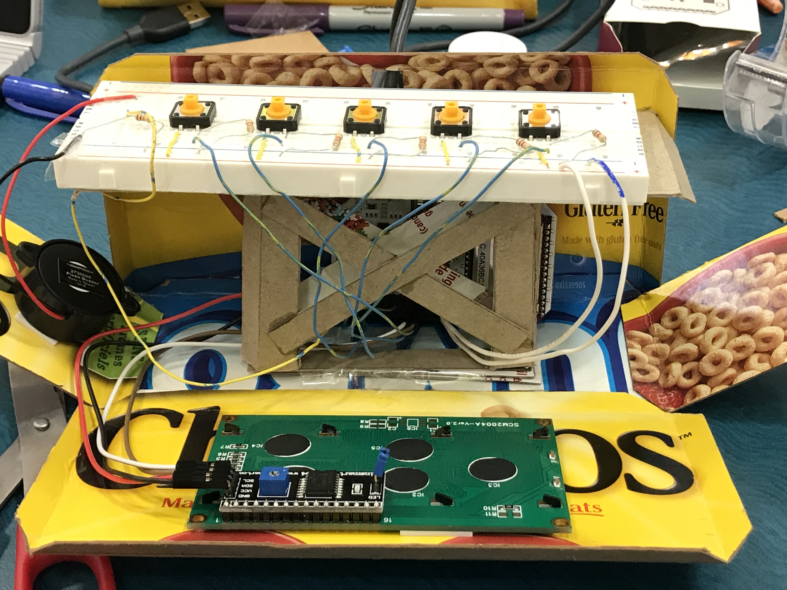

Smart Alarm Clock
This is a Smart Alarm Clock which was the final project in ECE 150 and was completed with two other group members. This alarm clock can display the date, time, store one alarm and display the weather. It retrieves the weather from the Yahoo Weather API. This is all coded in C with some functionality being implemented with python scripts accessed through the linux terminal of the Onion Omega 2.
The hardware

The machine is made up of wires, resistors, and buttons.
Each button is connect to both the power and ground, and to a gpio port on the Onion Omega board. This allows the
button pressed to be read where it allows the user to interact with the program. The resistor is connected in series
with to the wire to the gpio to restrict the voltage to a safe amount.
 Furthermore, the machine also employs the use of an 20x4 Liquid Crystal Display (LCD) with an I2C Module and a speaker. The LCD with I2C connects to the VCC, GND, SDA and SCL pins on the Onion Omega 2. This allows for the Omega 2 to output the various pieces of data required such as weather and time to the display. The I2C module was used because it is very simple to implement due to the fact it only has a two-wire interface. This two wire interface allowed us to utilize the other pins for the buttons. The speaker is used as part of the alarm function. When the alarm time has been reached, the speaker outputs a loud sound to notify the user that the alarm has sounded.
The software
For the software component, the project was mainly made using c. However, some features could not be made to work with
c, specifically the weather API and outputting to the LCD. For both of these, the solution was to run bash commands in
the terminal since the Onion Omega was a small linux machine. From this, the machine could also run a python file
which could run the functions that could result in the required actions. For example, in the project we would
use snprintf() to get commands such as snprintf(command, sizeof command, "%s%s%s", "curl
freegeoip.net/json/", ipaddress, " > content.txt"). Breaking this down, here we are creating the command
to get the location from the IP address. Then, system(command) is used to run this command in the
command line. Furthermore, for the LCD, the python LCD library was used since the C++ library could
not be made to work. To achieve this, python /FireOnion_I2C_LCD/src/lcd.py -a 0x27 was used.
python was used to run the file, and /FireOnion_I2C_LCD/src/lcd.py was used to run the
lcd.py file. Also, the text to be outputted is also entered in through the command line,
also injected into the string using the snprintf()